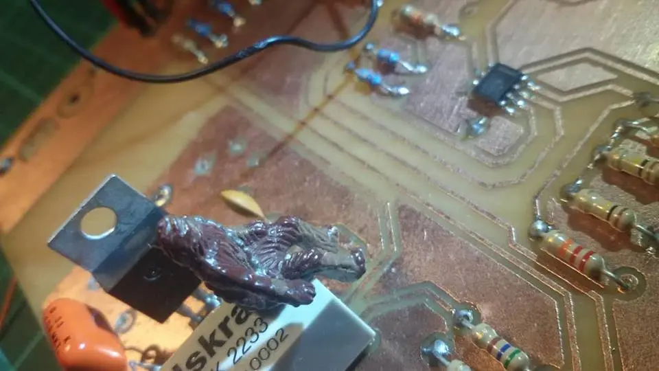

Noviembre 2025
Digit
Exploración de un dispositivo de escritorio para interactuar con inteligencia artificial: diseño de producto, hardware, sistemas embebidos e interfaces.
Explorar proyecto ↗// EXPLORACIÓN · DISEÑO · INGENIERÍA
Ideas, prototipos y desarrollos que conectan electrónica, software y producto. Un archivo para explorar lo que fui construyendo y aprendiendo.
20 proyectos para explorar
Noviembre 2025
Exploración de un dispositivo de escritorio para interactuar con inteligencia artificial: diseño de producto, hardware, sistemas embebidos e interfaces.
Explorar proyecto ↗
Febrero 2024
Enclosure3D controla la temperatura y humedad en impresoras 3D cerradas, mejorando la calidad de impresión.
Explorar proyecto ↗
Abril 2023
Monitor experimental de ambiente con ESP8266, sensores, indicadores y Wi-Fi. Exploración de hardware, visualización de variables e interacción.
Explorar proyecto ↗
Septiembre 2022
¿Qué pasaría si tu heladera pudiera aprender tus rutinas y hábitos de consumo? ¿La llamarías inteligente?
Explorar proyecto ↗
Diciembre 2021
Proyecto experimental de refrigeración y control: explorar hábitos de uso, observar variables y evaluar posibles mejoras en el consumo de una heladera.
Explorar proyecto ↗
Noviembre 2020
Un sillón inteligente con tomacorrientes, cargadores USB, luz dimmerizable y baúl, hecho con madera reciclada.
Explorar proyecto ↗
Noviembre 2018
Desarrollo y fabricación de un instrumento de laboratorio como equipo auxiliar de trabajo.
Explorar proyecto ↗
Enero 2018
Desarrollo de un producto de enfriamiento rápido de bebidas: prototipo, validación, inversión e industrialización internacional como cofundador y CTO.
Explorar proyecto ↗
Marzo 2017
Puede determinar la evolución deportiva de un escalador a lo largo de todo su entrenamiento.
Explorar proyecto ↗Agosto 2016
Vubo es un VUmetro sobre un cuBO de led. Detecta el sonido ambiente y lo muestra en 5 niveles con forma de un cubo.
Explorar proyecto ↗
Enero 2016
El control PID es muy utilizado, a pesar de ser una solución lineal, por lo cual sintonizar las ganancias suele ser complicado o se deben realizar consideraciones que acotan las soluciones. En este trabajo se desarrolla un control difuso basado en el sistema bola y viga.
Explorar proyecto ↗
Enero 2016
Registro de información de todas las variables manejadas por el sistema para tener una perspectiva del comportamiento de la aeronave.
Explorar proyecto ↗
Diciembre 2015
La caracterización de las propiedades dieléctricas de los materiales a frecuencia de radio ha ganado cada vez más importancia.
Explorar proyecto ↗
Marzo 2015
Hoy en día ya no se piensa en botones mecánicos, ya sea porque son ruidosos, se desgastan o porque no, poco estéticos.
Explorar proyecto ↗
Abril 2014
El estudio del comportamiento que una aeronave tiene al desplazarse por el aire y su control asociado.
Explorar proyecto ↗
Octubre 2013
Reunión de Procesamiento de la Información y Control (RPIC) celebrada en la ciudad de San Carlos de Bariloche, del 16 al 20 de Septiembre 2013.
Explorar proyecto ↗
Diciembre 2012
Indicador de nivel digital, con un display indica el ángulo de inclinación y su dirección, por un gráfico tipo burbuja para una lectura rápida.
Explorar proyecto ↗
Diciembre 2011
Partiendo de un motor extraído de un disco rígido en desuso armamos un control de un Motor Trifásico del tipo BLDC de baja potencia.
Explorar proyecto ↗
Diciembre 2009
Implementación sobre un microcontrolador funcionando con una pequeña máquina inteligente, la cual reconoce su ubicación y se desplaza hasta llegar al nuevo punto.
Explorar proyecto ↗
Diciembre 2007
Darle capacidad de razonar y movimiento a un agente no vivo, es uno de los grandes sueños que la ciencia y el cine persiguen hace tiempo.
Explorar proyecto ↗No encontramos proyectos con esos filtros. Probá con otro término o elegí otro año.
// EL SIGUIENTE PASO
Una primera conversación para entender el desafío y ver si puedo aportar valor.
↗ Hablemos de tu proyecto